Local-first learning
A learning quest you carry with you.
Pick a course, play through short scenes and earn your way up the levels. Security, AI, systems, networks and programming, told as stories with a guide at your side. Your progress stays on your own device.
No account. No subscription. No analytics.
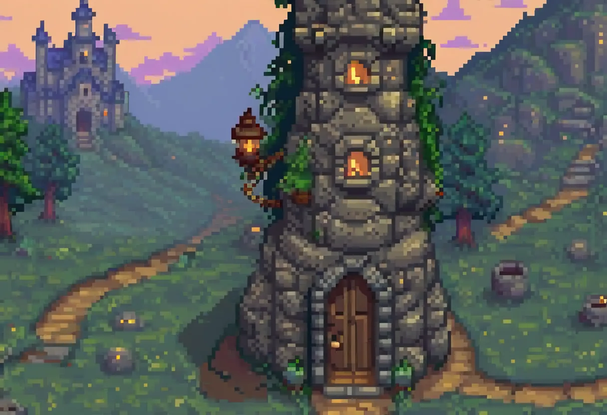
How it plays
Every course is a quest.
Chapters become stops on a map, lessons become scenes, and the work you do earns experience. It is still real practice: readings, quizzes, code, SQL, terminals and decisions.
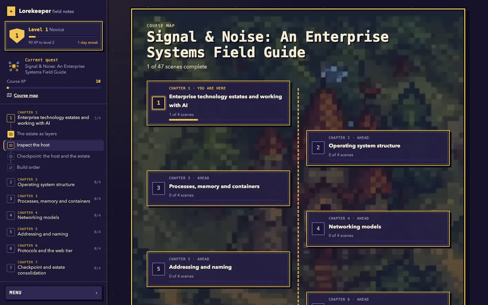
Scenes with a guide
Each lesson opens as a scene with the course art and a narrator who tells you what the task is.
Levels and streaks
Experience adds up across every course. Your level, the XP to the next one and your daily streak sit at the top of the quest log.
Moments that count
Finishing a scene stamps it. Clearing a chapter unlocks the next. Levelling up gets its own moment.
A map of the course
See every chapter as a stop on the trail, where you are, and what is ahead.
Meet the guides
A narrator for every topic.
Each pack is led by a guide who suits the subject.
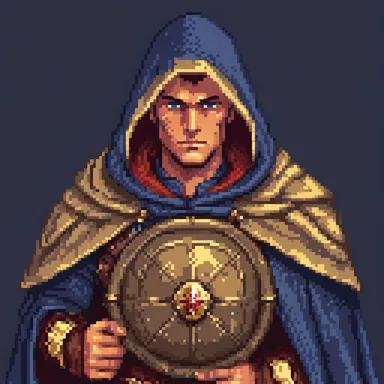
Captain VeySecurity and audit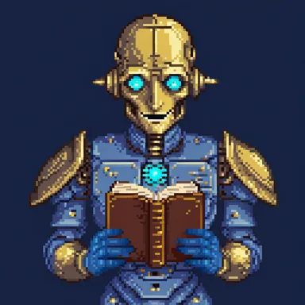
CogAI and judgement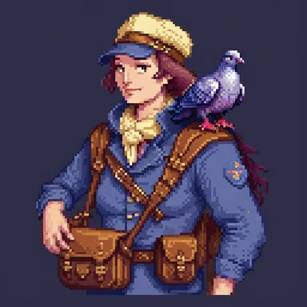
Wren the CourierNetworks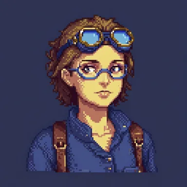
TinkProgramming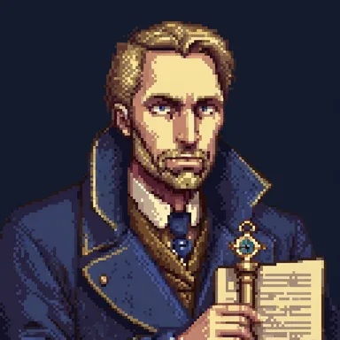
Master HaleSystems and design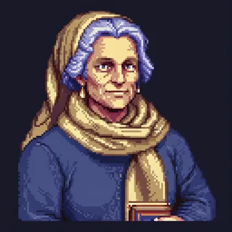
Mentor AshTeaching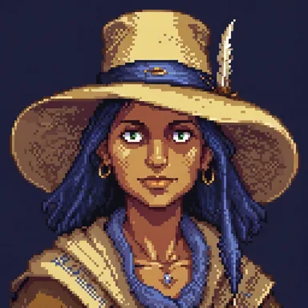
Pip the CartographerReferenceTwo modes
Quest or Study. Same lesson, your choice.
Switch at any time from the menu. The content, progress and exercises are identical.
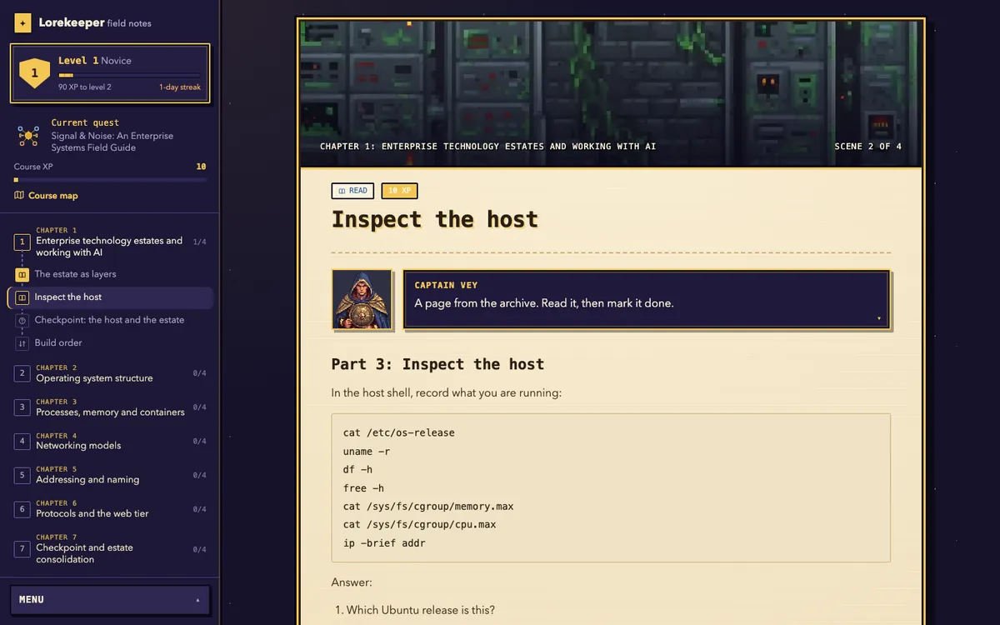
Quest
The default. A pixel RPG with scenes, narrators, levels, completion moments and a map. Optional chiptune sound.
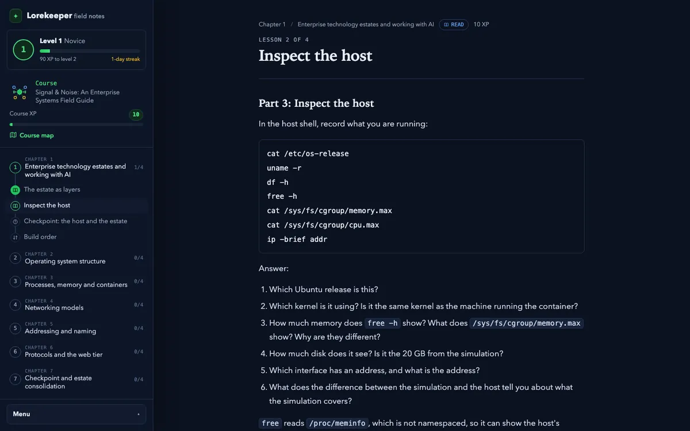
Study
Calm and readable for long sessions, projectors and screen readers. No banners and no animation.
Why Lorekeeper
Learning that stays yours.
Lorekeeper is deliberately small and local-first. It is not an LMS, a subscription platform or a monitoring tool. It is the practice layer you can keep.
Private by design
No account, no analytics, no server. Packs and progress live in your browser, with export and import for backup.
You control the library
Add only the packs you want. Hide or remove them at any time. Progress stays local and exportable.
Runs in the browser
No install needed to start. Install it as an app when you want an icon and offline access to visited lessons.
Find your trail
Answer four questions for a suggested starting point, or browse freely. It is a recommendation, never a gate.
Signed packs
Every pack in the store is signed and verified before it is added. Exercises run in a sealed sandbox.
Optional AI tutor
Connect a local Ollama model or an OpenAI-compatible endpoint. Nothing is sent until you press Send.
Library
Small packs, broad ground.
Each pack is a short course. Search, filter and add only what you need.
Install
Install it if you want an app.
Lorekeeper is a progressive web app: a website that can behave like an app. Open it in a browser straight away, then install it for an app icon, a standalone window and offline access to visited lessons.
Chrome or Edge
Open Lorekeeper, then choose Install from the address bar or browser menu.
Safari on iOS
Open Lorekeeper, tap Share, then choose Add to Home Screen.